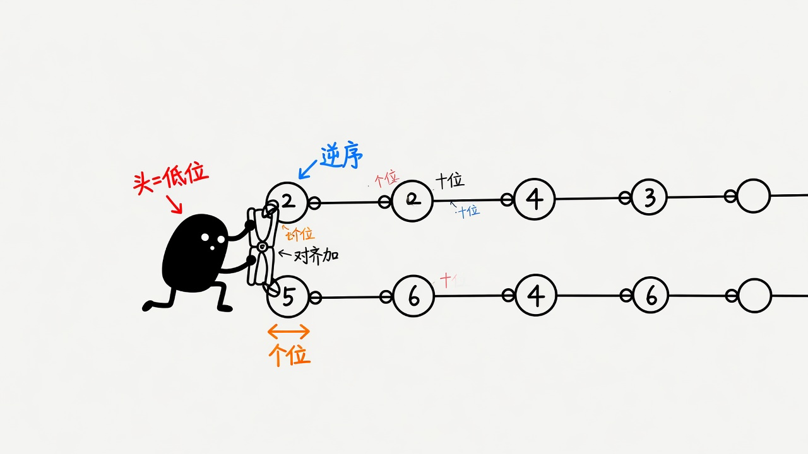
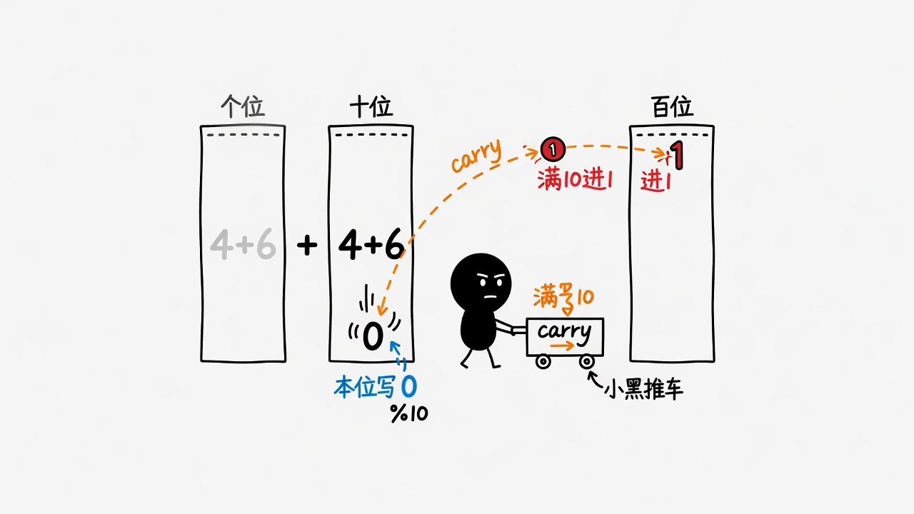

目标：理解大整数按位运算在链表结构上如何落地，而不是背「dummy head 模板」。 先看应用场景与多解法取舍，再做统一提交的理解测。 作答过程不公布对错；全对复制下一步提示；有错展示解析并可重试。
Dummy head、递归写法都是表达工具。核心始终是：
状态 (指针1, 指针2, carry) 的转移。
选迭代还是递归，看语言习惯与栈深度，不是高低之分。
同步走两条链，缺位当 0；sum%10 写节点，sum/10 进位；循环条件含最终 carry。
在优化什么：一次遍历完成加法，贴合加法定义。
f(l1,l2,carry) 与迭代同构。链表很长时注意栈。
思维价值：看清三维状态；代码有时更短。
长度可达 100，原生整型不够；用大数库则掩盖了链表进位训练目标。
何时可以：位数极小的脚本玩具；生产 bigint 应有专门表示。
若存储是高位在前，才需要从尾部或先反转。本题已是逆序，直接从头加。
| 解法 | 适合 | 代价 |
|---|---|---|
| 迭代+carry | 通用主推 | 要仔细处理空指针与尾 carry |
| 递归 | 状态清晰、链不太长 | 栈深度 |
| 转整数 | 位数极小 demo | 大数与题意不符 |
342 + 465 → 链表 2→4→3 与 5→6→4 2+5=7；4+6=10→0 进1；3+4+1=8 → 7→0→8


全部作答后提交。前提交不显示对错；错了看解析再「再来一次」。
Q1. 链表 2→4→3 表示的整数是？
Q2. l1=[2,4,3], l2=[5,6,4] 输出节点值？（逗号分隔）
Q3. 迭代循环应持续到？
Q4. 常见坑？（多选）
Q5. 本位写 sum % ?，进位 sum / ?，问号是？
Q6. 为何主推按位模拟而不是转成整数？
Q7. Dummy head 的主要价值是？